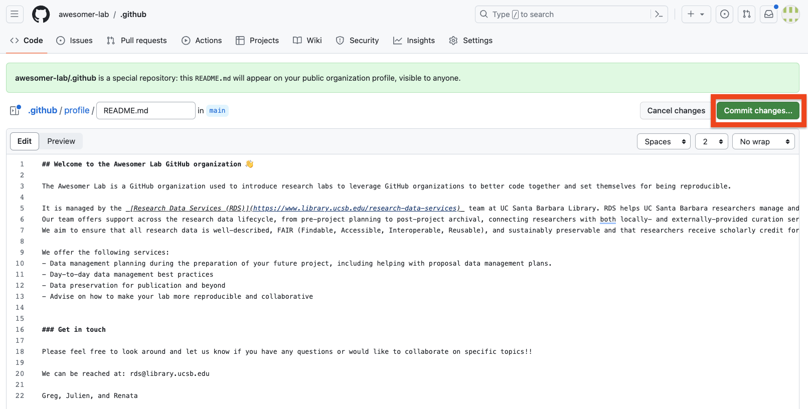
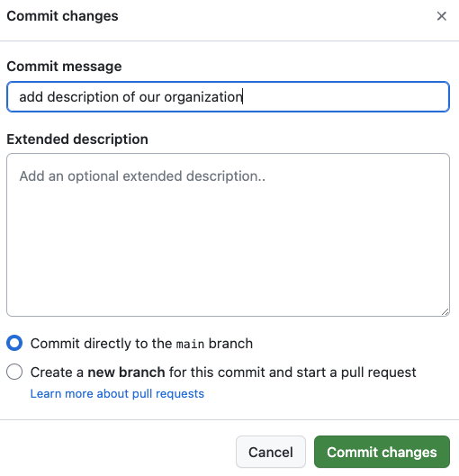

GitHub Organizations
Why a GitHub organization
- Facilitate collaboration:
- Create teams to easily assign people to repositories
- Manage tasks at the organization level (not tight to a specific repository)
- Simplify code management:
- The organization owns the repository
- Design templates to streamline documentation
- Assign roles to users, including external collaborators
- Increase your visibility on GitHub:
- Create a landing page introducing your lab
- One stop to see your Lab contributions
Here is an example we created: https://github.com/awesomer-lab
Setting up your Lab’s GitHub Organization
Before setting up your organization, make sure that you have claimed your education GitHub account first!!
Since we are part of an University, students and faculty have access to special account benefits for free. The application process is straightforward. Get started here: https://education.github.com/
- You can create an organization by clicking on the
+sign menu at the top right of the GitHub taskbar and select New organization

- This will send you to a new page with several options to start your organization. Choose the free option at this time.
- Now you can provide the name of your organization. We recommend naming it in a way that reflects your Lab name to help with the organization’s branding. Select the email you used to get the education discount and check the “my personal account” option.
- And congratulations this is it!! You can now invite your collaborators to the organization (you will be able to do so later as well).
- Your organization page should look as follows:
Note all the suggestions that GitHub is providing to help you customize your organization according to your needs. We are going to follow the recommendation on the right side (red box above) to add a special README.md that will act as a landing page for our organization.
Customizing your GitHub Organization
Adding a landing page
Adding a landing page is a great opportunity to describe your research lab and what content one can expect to find in this organization. It is also a good location to describe guidelines on how to best engage with you and provide contact information.
- Click on the
create a README fileon the right sidebar (see red box above). This will trigger the creation of a new special repository called.githubthat will be used to host your README file. Click Create repository.

- Fill out the necessary information as follows:
We recommend checking the box Add a README file as a good practice but note it is not the README that will be used as your landing page, it is the one describing this new repository hosting your landing page README in a special subfolder.
- Create your landing page by clicking on the Add README button on the right sidebar (red box below)
Note the path to this special README: .github/profile/README.md
- Edit your landing page. The template used to create this special README provides suggestions about the type of information you might want to add to your landing page. Those suggestions are in a comment block (delimited by
<!--&-->) and thus won’t be shown when the README is rendered. We still do recommend deleting this block once you are done editing your README
Here is an example of how we defined the landing page README for our test organization:

- Save your README: Now that you have your first version of your GitHub organization landing page (you can always iterate later on it), we are ready to save this version by clicking on the Commit changes button (red box above). This will prompt a new page where you can add a commit message to describe the changes. Finally, you can hit the Commit changes button to save this version.

Voil√† üéâ !! When you go back to your organization‚Äôs main page, you should now see the text you just wrote at the top of the landing page!
Setting up your organization profile
Now that you have a landing page, it is also a great idea to fill out some metadata about your organization under the Settings tab of the main navigation bar (top right). This will help with the discovery of your Organization. You can provide a more Human friendly name, an email to reach out to you, a short description of your organization, and an URL such as your lab home page.
Finally, click Update profile to save your changes.